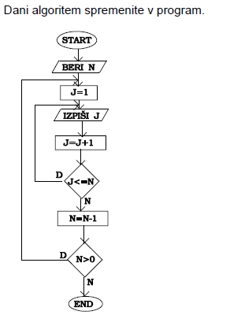
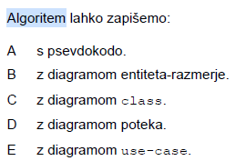
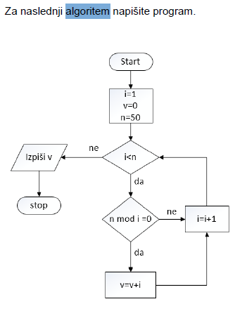
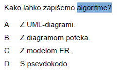
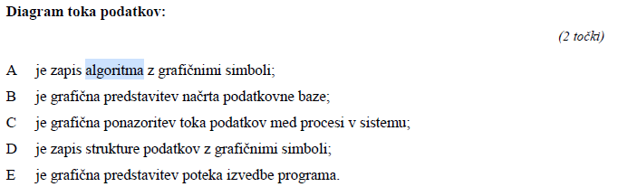
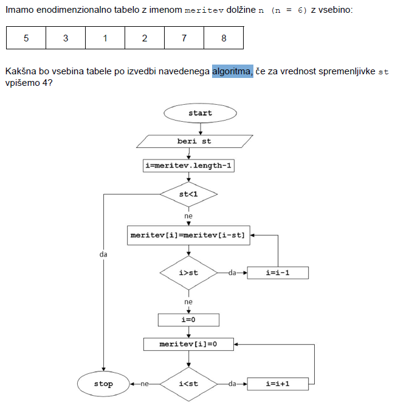
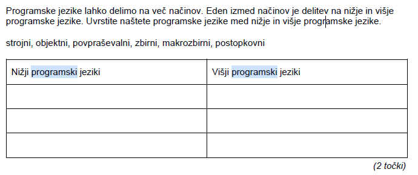
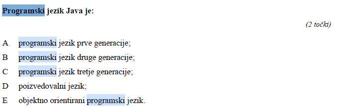
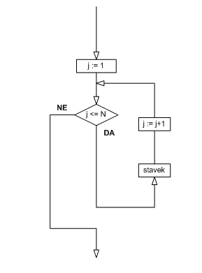

Algoritmi
Cilji:
Dijaki
poznajo pojem algoritma in našteti njegove lastnosti (razumljivost, končnost, enoumnost, razčlenjenost, …) in te lastnosti razume,
opišejo načine zapisa algoritma in jih prikažejo na primeru,
izdelajo algoritem v obliki diagram poteka,
opredelijo pojem programskega jezika in razložijo njegovo funkcijo,
poznajo različne vrste programskih jezikov in jih razvrstijo po namenu in uporabi,
razloži, kaj je program in napiše primer računalniškega programa
Naloge iz maturitetnih pol na temo algoritmi in programski jeziki:












Vaje:
Risanje po navodilu
Zapis algoritma
Naloga: sledi algoritmu (delaj, to kar ti naroči)
ZAČETEK vsota ← 0 ŠTEVILKA ← 1 PONAVLJAJ DOKLER vsota ni enaka -3: vsota ← vsota + ŠTEVILKA ŠTEVILKA ← ŠTEVILKA + 1 Izpiši(vsota) KONEC |
|
|
|---|
Zaključek:
Algoritem se nikoli ne konča (po navadi to ni dobro)
Algoritem ni bil najbolj jasen (nismo ga vsi razumeli, bila so podvprašanja) – to se je pokazalo pri številki -3 (nismo vedeli ali odštevam …)
Naloga:
Spremeni algoritem tako, da se bo končal.
Spremeni algoritem tako, da bo imel neki smisel (MAT).
Spremeni algoritem tako, da sešteje prvih 100 naravnih števil (D.N.)
ZAČETEK vsota ← 0 ŠTEVILKA ← 1 PONAVLJAJ DOKLER vsota ni enaka 3: vsota ← vsota + ŠTEVILKA ŠTEVILKA ← ŠTEVILKA + 1 Izpiši(vsota) KONEC |
|---|
Def.1: Algoritem je navodilo, s katerim rešujemo določen problem. Običajno je zapisan kot seznam korakov, ki nas pripeljejo do rešitve problema. [vir]
Def. 2: Algoritem je v matematiki in računalništvu končno zaporedje natančno določenih, računalniško izvedljivih navodil, običajno namenjenih reševanju težav ali za izvajanje izračuna. [vir]
Def. 3: Algoritem je seznam pravil, ki jih je treba upoštevati pri reševanju problema. [vir]
Def. 4: Algoritem je zaporedje korakov, ki nas privedejo do cilja. Algoritmi morajo biti hitri, končni in enolični. Uporabljamo jih v vsakdanjem življenju, računalništvu in sodobni tehnologiji. [vir]
Def. 5.: An algorithm is a step-by-step procedure or formula for solving a problem. It is a set of well-defined instructions that take an input, process it, and produce an output. Algorithms are fundamental to computer science and programming, as they form the basis for writing programs to perform specific tasks. [Copilot na vprašanje – What is algorithm?]
Algoritem je podrobna vrsta navodil za izvajanje nekega dela ali reševanje problema. Ne-tehnično gledano uporabljamo algoritme v vsakodnevnih nalogah, kot je recept za peko kolačkov ali priročnik v smislu "naredi sam".
Kako podrobno razdelamo korake, je odvisno od tega, kdo izvaja algoritem (človek, računalnik). Če algoritem izvaja računalnik, potem govorimo o računalniškem programu. Primer algoritma iz vsakdanjega življenja je kuharski recept. [vir]
Zapis algoritma
Kako lahko algoritem zapišemo? Obstaja več načinov.
| Zapis algoritma | Primer |
|---|---|
| Naravni jezik | Sestavine: 4 beljaki moka sladkor (po želji) 2 čajni žlici pecilnega praška mleko vanilin sladkor Postopek: Stepemo beljake v sneg in jim dodamo sladkor, nato spet dobro stepemo, da dobimo lepo kremo. Nato dodamo še ostale sestavine. V ponvi spečemo palačinke in jih namažemo z nadevom (po želji). |
| Grafično – npr. diagram poteka |  |
| Programski jezik | if (stevilo > 4) stevilo = stevilo + 1; else exit(0); |
| Psevdokod | če (število > 4) povečaj število za 1 sicer končaj_program |
| Drugi načini | ?? |
Vprašanje: Od česa je odvisna način zapisa algoritma?
Odgovor: Odvisno od namena (za kaj ga bomo potrebovali) in tistega, ki ga bo izvajal (računalnik, človek).
Zapisi algoritma (prednosti, slabosti)
| Način zapisa | Značilnosti | Pozitivne lastnosti | Negativne lastnosti |
|---|---|---|---|
| Besedni zapis | Algoritem je zapisan v stavkih v naravnem jeziku (slovenščina ali angleščina). | Enostaven za razumevanje. Ni potrebno znanje programiranja. Primeren za vsakdanjo uporabo. |
Dolg in obsežen zapis za kompleksne probleme. Lahko pride do dvoumnosti. Težko za neposredno izvajanje s strani računalnika. |
| Psevdokoda | Poenostavljen zapis, ki spominja na programski jezik, a je bolj čitljiv. | Lažje pretvorljivo v program. Pregledno za algoritme z več koraki. Jasna logika. |
Zahteva osnovno znanje strukture algoritma. Ni standardizirana vsakdo Lahko piše po svoje. |
| Diagram poteka (flowchart) | Grafični prikaz z osnovnimi simboli: oval (začetek/konec), pravokotnik (akcija), romb (pogoj), puščice (tok). | Pregleden vizualni prikaz. Dober za načrtovanje. |
Težko za dolge ali zelo kompleksne
algoritme. Potrebno veliko časa za risanje kompleksnih algoritmov. |
| Programska koda | Algoritem je zapisan v pravem programskem jeziku (Python, Java, C, …), računalnik ga lahko izvede. | Neposredno izvedljivo na računalniku. Omogoča testiranje in preverjanje rezultatov. |
Zahteva znanje programiranja. Težko berljivo za začetnike brez izkušenj. Ni vizualno pregledno kot diagram. |
Lastnosti algoritma
pravilnost – algoritem mora pravilno rešiti problem. Za določene vhodne podatke mora »izračunati« pravilne izhodne podatke.
popolnost – vedno vrne rešitev; če obstaja.
razumljivost – izvajalec (človek, računalnik) ga mora (enoumno) razumeti,
končnost – izvajanje se mora po določenem številu korakov končati (ne sme biti neskončen),
enoumnost (nedvoumnost) – obstaja le en način interpretacije ukazov - vir
determinizem – če sledimo ukazom, se bo želeni rezultat vedno dosegel – z drugimi besedami, pri istem vhodu, moramo dobiti vedno isti izhod. Računalnik je deterministični stroj. Računalnik se ne zna odločati.
splošnost – algoritem mora rešiti čim širši spekter problemov – če je to mogoče
učinkovitost (časovne kompleksnost) – algoritem mora biti hiter
robustnost – pravilno obvladamo nepravilne, nepričakovane, ekstremne vhodne podatke brez prekinitev, napak
Vir:
https://ucilnice.arnes.si/pluginfile.php/220291/mod_resource/content/1/4-algoritem.pdf
https://www.youtube.com/watch?v=cDA3_5982h8
Dve vrsti napak pri programih (algoritmih).
Sintaktične: pravopisne napake – program ne dela
Semantične: pomenske napake – progam dela – napačno (lahko samo v zelo redkih primerih – TEŽAVA)
1 +1 = 2
Vprašanja iz ProGO
Razloži latinski pregovor: “Kdor hitro da, dvakrat da.”
ODG: Najdi na wikipediai
ODG: oba odgovra predstavljen pri pouku sta logična in pravilna
Kaj je značilnost proceduralnega znanja.
Za pridobivanje je potrebna vaja.
Zanje, ki ga uporabljamo v praksi. Vožnja avtomobila.
Zanje , kako se nekaj naredi. Postopek.
Kakšna je razlika med proceduralnim in deklarativnim znanjem?
Deklarativno – KAJ, KDAJ?
Proceduralno – KAKO (nekaj narediti, rešiti problem)?
Na kakšen način lahko pridemo do dobrega proceduralnega znanja?
Z ponavljanjem vaje. Fajn je znati tudi dejstna – deklarativno znanje. Izkušnje skozi različne situacije. Učenje iz napak. Učenje iz tujih napak. Vaja dela mojstra . Mojster pa dela vajo. Vaja skozi igro. Poslušanje - sprejemanje kritik.
Kako je programiranje povezano s proceduralnim znanjem?
Programiranje je pisanje navodil.
Opiši pojem programiranje in program!
Program je skupek navodil, ki vodijo do cilja. Je zaporedje ukazov. Programskih ukazov. Napisan je v programskem jeziku. Umetni jezik. Ali je to čisto res? Preveri! Ni čsito res, v širšem pomenu besede , je lahko program tudi kakšno drugo navodilo (televizijski progrma).
Programiranje je proces (postopek) katerega cilj je program.
Program lahko opišemo z navodili.
V kakšni obliki lahko izrazimo navodilo?
Naravni jezik, umetni – programski, psevdokod, grafični (diagram poteka)
Kakšne vrste stavek je navodilo? (Trditev. Vprašanje. Velitev. Prošnja.)
Velitev1
Napiši dva konkretna primera!
Izpiši(»Zdravo«),
Vsota = 2 + 3
Pojdi čez vrata!
Vstani!
Zakaj programiramo v programskem jeziku in ne v naravnem jeziku (kar bi tudi bilo možno)?
Če bi želeli v naravnem jeziku program napisati, bi morali ful bolj na dolgo in podrobna!
Navodilo mora biti enoumno!
Kaj je skupno različnim programskim jezikom in tudi nakterim različnim naravnim jezikom?
Kako bi opisali trojco pri programiranju: vhod, osrednji del, izhod. V razlagi uporabi besedo algoritem!
Kdaj kot rezultat dobimo izpis in kdaj izdelek? Na kakšen način lahko rezultat izpišemo v računalniku? Je še kakšen drug način, za predstavitev rezultata?
Ali je vrstni red izvajanja pomemben? Razloži na poljubnem primeru!
Razloži pojem konstanta. Kaj “sestavlja” konstanto?
Je vrednost, ki se med izvajanjem program ne spremeni!
Spremenjivka se spreminja, konstanta pa NE!
X = 1
V x shrani vrednost 1.
Kdaj uporabimo konstante?
Lahko pišemo programe tudi brez uporabe konstant?
Kakšna je razlika med ukazoma za izpis (spodaj b in c)
a=”test”
izpis “a”
izpis a
Kateri lik uporabimo za izpis?
Diagram poteka
Kaj je diagram poteka?
Kako lahko zapišemo algoritem?
Diagram poteka, programski jezik, psevdokod, naravni jezik!
Je način, kako lahko zapišemo (opišemo) algoritem. Je grafični način. S simboli. In znaki. In števili.
Čemu je namenjen? Za kaj ga uporabljamo?
Katere simbole lahko uporabimo?
Primer:
Naloga: Sledi algoritmu. Zapiši: spremembo spremenljivk, izpis.
Kaj pomeni V:x?
Počakaj, da uporabnik nekaj vpiše in pritisne enter. Ko vpiše se vpisana vrednost shrani v x.
Opisali smo vse simbole in jih razložili.
Postopek pisanja algoritmov.
Za vsak problem bomo:
Natančno prebrali navodila.
Napisali dva (ali več, če je to potrebno) različnih scenarijev, s katerima bomo prikazali, ali razumemo problem.
Napisali rešitev problema (algoritem) – diagram poteka.
Test – sledili bomo napisanemu algoritmu iz točke 3 in primerjali našo rešitev s točko 2. Pri sledi bomo v tabeli zapisovali spremembe vrednosti spremenljivk ter vpis in izpis.
Če se rezultati v točki 2 in 4 ujemajo, je rešitev pravilna, če ne, moramo ponoviti korake 3 in 4. (Morda celo spremeniti točko 2.)
Napiši diagram poteka za programe:
Program naj sešteje števili 3 in 7, rezultat shrani v spremenljivko n in izpiše rezultat na ekran.
Program, kjer uporabnik vpiše dve števili. Izpiše se vsota. Napiši uporabniku prijazen program.
Program izračuna ostanek pri deljenju števil 7 in 3 in rezultat shrani v spremenljivko x. Na ekran izpiše »Ostanek pri deljenju števil 7 in 3 je 1«. Ostanek izpišemo iz spremenljivke. (operator za računanje ostanka je %)
Program, ki uporabnika vpraša po vnosu dveh števil. Nato program izračuna in v spremenljivki shrani produkt in količnik števil. Najprej izpiše produkt, po pritisku tipke enter pa še količnik. Po pritisku tipke enter se program konča. Naredi uporabniku prijazen program.
Program, kjer uporabnik vpiše dve celi števili. Program izpiše: količnik in ostanek. Pazi, da izpišeš samo cela števila. Uporabi samo standardne aritmetične operatorje (+,-,/,*,%,=).
Vprašanja iz vaj:
Napiši en primer vejitve z diagramom poteka, ki jo računalnik zna razrešiti in en primer vejitve, ki jo računalnik ne zna razrešiti. Razloži zakaj! Kateri način bo prepovedan?
Kateri simbol uporabljamo za odločitve v diagramu poteka. Kaj napišemo znotraj simbola? Kako to preberemo? Koliko izhodov je iz odločitve? Kako vemo, po kateri poti bomo nadaljevali program?
Naloge:
Napiši diagram poteka, kjer uporabnik vpiše dve števili. Nato števili izpiše po velikosti. Najprej manjše, doda vejico in presledek, nato še večje. Na koncu doda piko.
Napiši diagram, kjer uporabnik vpiše starost in spol (m/ž). Nato sledi izpis: »Si polnoleten«, »Si polnoletna«, »Nisi polnoleten«, »Nisi polnoletna« odvisno od vnosa uporabnika.
Napiši diagram poteka, ki izpiše Janja Garnbret 3 krat na ekran.
Napiši diagram poteka, ki izpiše Janja Garnbret 100 krat na ekran. Razmisli, kako bi program okrajšal s ponavljanjem.